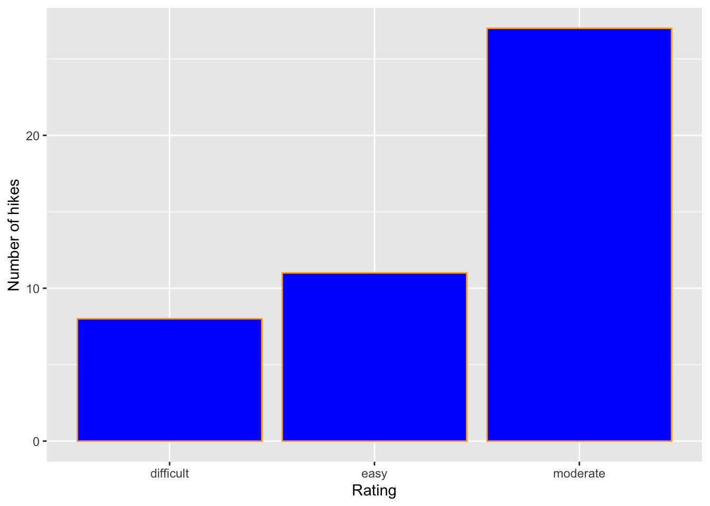
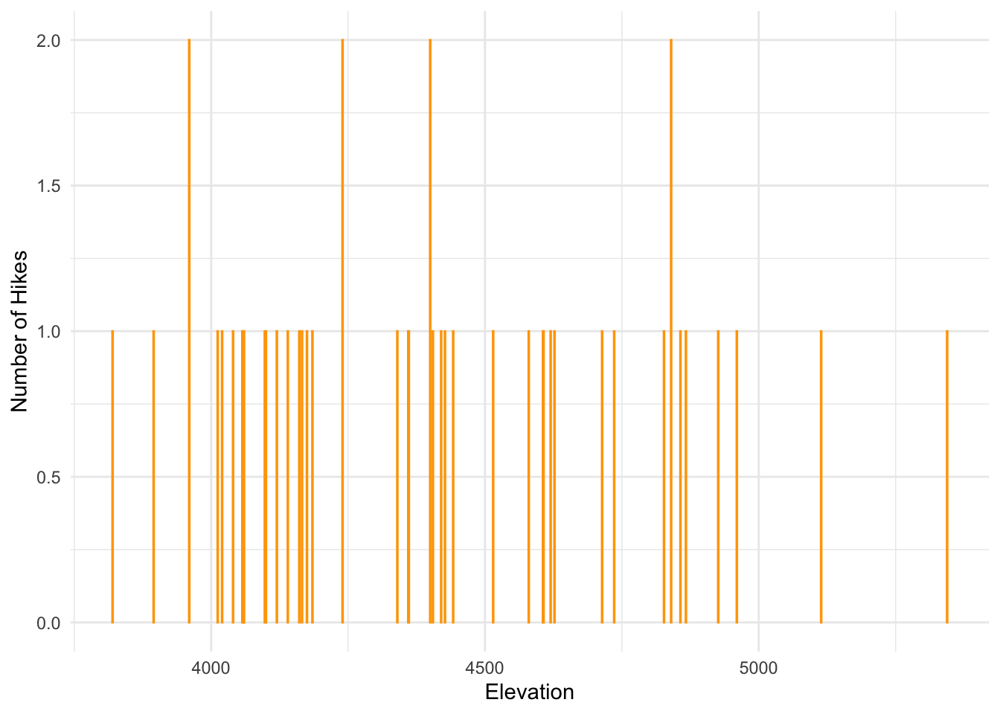
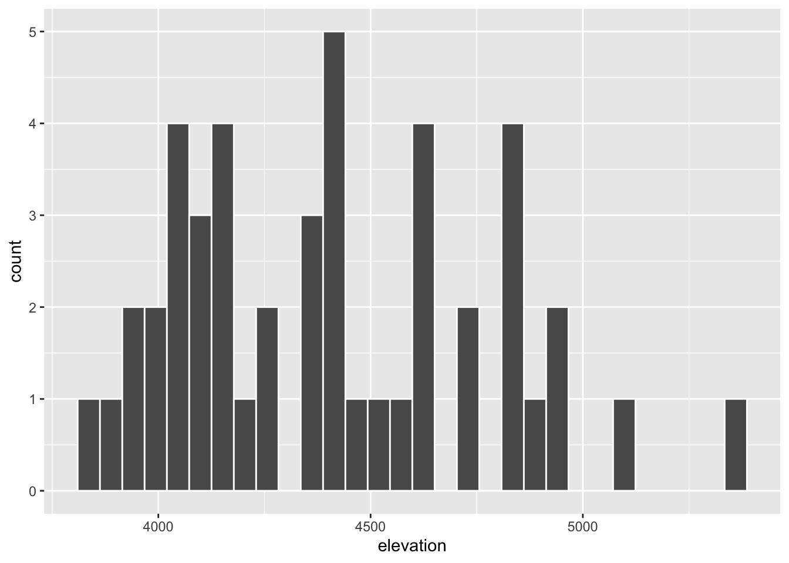

4 Background
az— title: “Data viz” format: html: toc: true toc-depth: 2 embed-resources: true
We’re starting our unit on data visualization or data viz, thus skipping some steps in the data science workflow. Mainly, it’s tough to understand how our data should be prepared before we have a sense of what we want to do with this data!

Warm-up (together)
- Convince ourselves about the importance of data viz.
- Explore the “grammar of graphics”.
Exercises (in groups)
- Explore how to create data viz in RStudio.
- Understand the different basic univariate visualizations for categorical and quantitative variables.
Watch:
- Intro to ggplot (Lisa Lendway)
- Univariate viz (interpreting) (Alicia Johnson) – you can ignore the parts about numerical summaries.
Read:
- A grammar for data graphics (Baumer, Kaplan, & Horton)
- Data visualization (Wickham, Çetinkaya-Rundel, & Grolemund)
- Visualizing distributions (Wilke)
- ggplot cheat sheet
5 Warm-up
5.1 The importance of visualizations
EXAMPLE 1
The data below includes information on hiking trails in the 46 “high peaks” in the Adirondack mountains of northern New York state. This includes data on the hike’s highest elevation (feet), vertical ascent (feet), length (miles), time in hours that it takes to complete, and difficulty rating. Open this data in a viewer, through the Environment tab or by typing View(hikes) in the console.
Tell me about the patterns and trends in hiking trail elevation. What about the the relationship between a hike’s elevation and the typical time it takes to summit / reach the top?
EXAMPLE 2
What if this New York Times article tried telling this story without using data viz? What would that story be like?

Benefits of visualization
- Understand what we’re working with:
- scales & typical outcomes
- outliers, i.e. unusual cases
- patterns & relationships
- Refine research questions & inform next steps of our analysis.
- Communicate our findings and tell a story.
5.2 Components of data graphics
EXAMPLE 3
Data viz is the process of mapping data to different plot components. For example, in the NYT example above, the research team mapped data like the following (but with many more rows!) to the plot:
| observation | decade | year | date | relative temp |
|---|---|---|---|---|
| 1 | 2020-30 | 2023 | 1/23 | 1.2 |
| 2 | 1940-60 | 1945 | 3/45 | -0.05 |
Write down step-by-step directions to use a data table like this one to create the temperature visualization. A computer is your audience. Thus be as precise as possible, but trust that the computer can find the exact numbers if you tell it where.
COMPONENTS OF GRAPHICS
In data viz, we essentially start with a blank canvas and then map data onto it. There are multiple possible mapping components. Some basics from Wickham (which goes into more depth):
a frame, or coordinate system
The variables or features that define the axes and gridlines of the canvas.a layer
The geometric elements (e.g. lines, points) we add to the canvas to represent either the data points themselves or patterns among the data points. Each type of geometric element is a separate layer. These geometric elements are sometimes called “geoms” or “glyphs” (like heiroglyph!)scales
The aesthetics we might add to geometric elements (e.g. color, size, shape) to incorporate additional information about data scales or groups.faceting
The splitting up of the data into multiple subplots, or facets, to examine different groups within the data.a theme
Additional controls on the “finer points” of the plot aesthetics, (e.g. font type, background, color scheme).
EXAMPLE
In the NYT graphic, the data was mapped to the plot as follows:
- frame: x-axis = date, y-axis = temp
- layers: add one line per year, add dots for each month in 2023
- scales: color each line by decade
- faceting: none
- a theme: NYT style
5.3 ggplot + R packages
We will use the powerful ggplot tools in RStudio to build (most of) our viz. The gg here is short for the “grammar of graphics”. These tools are developed in a way that:
- recognizes that code is communication (it has a grammar!)
- connects code to the components / philosophy of data viz
EXAMPLE: ggplot in the news
To use these tools, we must first get them into R/RStudio! Recall that R is open source. Anybody can build R tools and share them through special R packages. The tidyverse package compiles a set of individual packages, including ggplot2, that share a common grammar and structure. Though the learning curve can be steep, this grammar is intuitive and generalizable once mastered. Image source: Posit BBC on X

Follow the directions below to install this package, the directions depending upon whether or not you’re working on Mac’s server. Unless the authors of a package add updates, you only need to do this once all semester. To install:
- If you’re working on Mac’s RStudio server
tidyverseis already installed on the server! Check this 2 ways.- Type
library(tidyverse)in your console. If you don’t get an error, it’s installed! - Check that it appears in the list under the “Packages” tab (bottom right pane).
- Type
- If you’re working with a desktop version of R/RStudio
In the “Packages” tab (bottom right pane), click “Install”. From there type the name of the package (tidyverse), make sure the “Install dependencies” box is checked, and click “Install”.
6 Exercises
Goals
We’ll talk more later about “good” data viz, and steps to think about when building viz. In these exercises, the goal is to:
- Familiarize yourself with the
ggplot()structure and grammar. - Build univariate viz, i.e. viz for 1 variable at a time.
- Start recognizing the different approaches for visualizing categorical vs quantitative variables.
Directions
- General
- Be kind to yourself.
- Collaborate with and be kind to others. You are expected to work together as a group.
- Ask questions. Remember that we won’t discuss these exercises as a class.
- Activity specific
- The best way to learn
ggplotis to just play around. Focus on the patterns and potential of the code. Don’t worry about memorizing anything! You will naturally start to remember the most important / common code the more and more you use it.
- The best way to learn
Exercise 1: Research questions
Let’s dig into the hikes data, starting with the elevation and difficulty ratings of the hikes:
peak elevation difficulty ascent length time rating
1 Mt. Marcy 5344 5 3166 14.8 10.0 moderate
2 Algonquin Peak 5114 5 2936 9.6 9.0 moderate
3 Mt. Haystack 4960 7 3570 17.8 12.0 difficult
4 Mt. Skylight 4926 7 4265 17.9 15.0 difficult
5 Whiteface Mtn. 4867 4 2535 10.4 8.5 easy
6 Dix Mtn. 4857 5 2800 13.2 10.0 moderate- What features would we like a visualization of the categorical difficulty
ratingvariable to capture? I would want a bar-graph with the peak name being the x axis and the level of difficulty being the y axis. This allows for easy comparison of difficulty between different peaks. - What about a visualization of the quantitative
elevationvariable? I would want a line graph. with each peak getting a different line. Elevation being y axis and length being x axis. So you can easily visualize the ascent of the different hikes.
Exercise 2: Load tidyverse
We’ll address the above questions using ggplot tools. Try running the following chunk and simply take note of the error message – this is one you’ll get a lot!
In order to use ggplot tools, we have to first load the tidyverse package in which they live. Mainly, we’ve installed the package but need to tell R when we want to use it. Run the chunk below to load the library. You’ll need to do this within any .qmd file that uses ggplot().
Exercise 3: Bar chart of ratings (part 1)
Consider some specific research questions about the difficulty rating of the hikes:
How many hikes fall into each category? Are the hikes evenly distributed among these categories, or are some more common than others? 7 hikes fall into difficult. 11 hikes fall into easy. And 27 fall into moderate. The moderate hike is the most common, and then easy , and then hard.
All of these questions can be answered with: (1) a bar chart; of (2) the categorical data recorded in the rating column. First, set up the plotting frame:

Think about:
- What did this do? What do you observe? By adding + geom we cant tell R what kind of graph we want.
- What, in general, is the first argument of the
ggplot()function? It is telling r what is being plotted and from which survey. - What is the purpose of writing
x = rating? It tells r what the x axis is. - What do you think
aesstands for?!? It stands for axis
Exercise 4: Bar chart of ratings (part 2)
Now let’s add a geometric layer to the frame / canvas, and start customizing the plot’s theme. To this end, try each chunk below, one by one. In each chunk, make a comment about how both the code and the corresponding plot both changed.
NOTE:
- Pay attention to the general code properties and structure, not memorization.
- Not all of these are “good” plots. We’re just exploring
ggplot.

# This changed the heading of the y axis from "count" to "Number of Hikes"
ggplot(hikes, aes(x = rating)) +
geom_bar() +
labs(x = "Rating", y = "Number of hikes")
# This made the bars in the bar graph blue.
ggplot(hikes, aes(x = rating)) +
geom_bar(fill = "blue") +
labs(x = "Rating", y = "Number of hikes")
# This gave the blue bars an orange outline.
ggplot(hikes, aes(x = rating)) +
geom_bar(color = "orange", fill = "blue") +
labs(x = "Rating", y = "Number of hikes")
# Changed the background of the chart from gray to white.
ggplot(hikes, aes(x = rating)) +
geom_bar(color = "orange", fill = "blue") +
labs(x = "Rating", y = "Number of hikes") +
theme_minimal()
Exercise 5: Bar chart follow-up
Part a
Reflect on the ggplot() code.
What’s the purpose of the
+? When do we use it? It adds a geometric layer of what kind of plot we want.We added the bars using
geom_bar()? Why “geom”? That’s the geometric layer that is added.What does
labs()stand for?What’s the difference between
colorandfill? fill is the inside of the bar graph color is the edges of the bar. ### Part b {.unnumbered}
In general, bar charts allow us to examine the following properties of a categorical variable:
- observed categories: What categories did we observe?
- variability between categories: Are observations evenly spread out among the categories, or are some categories more common than others?
We must then translate this information into the context of our analysis, here hikes in the Adirondacks. Summarize here what you learned from the bar chart, in context.
Part c
Is there anything you don’t like about this barplot? For example: check out the x-axis again.
It doesnt go into the negatives?
Exercise 6: Sad bar chart
Let’s now consider some research questions related to the quantitative elevation variable:
Among the hikes, what’s the range of elevation and how are the hikes distributed within this range (e.g. evenly, in clumps, “normally”)? What’s a typical elevation? Are there any outliers, i.e. hikes that have unusually high or low elevations?
Here:
- Construct a bar chart of the quantitative
elevationvariable. - Explain why this might not be an effective visualization for this and other quantitative variables. (What questions does / doesn’t it help answer?)
ggplot(hikes, aes(x = elevation)) +
geom_bar(color = "orange", fill = "blue") +
labs(x = "Elevation", y = "Number of Hikes") +
theme_minimal()
Its hard to easily visualize the different hikes because there are so many of them on this chart. And the range of the values are so huge it makes the bars difficult to look at.
Exercise 7: A histogram of elevation
Quantitative variables require different viz than categorical variables. Especially when there are many possible outcomes of the quantitative variable, it’s typically insufficient to simply count up the number of times we’ve observed a particular outcome (as the bar graph did above). It gives us a sense of ranges and typical outcomes, but not a good sense of how the observations are distributed across this range. We’ll explore two methods for graphing quantitative variables: histograms and density plots.
Histograms are constructed by (1) dividing up the observed range of the variable into ‘bins’ of equal width; and (2) counting up the number of cases that fall into each bin. Check out the example below:

Part a
Let’s dig into some details.
- How many hikes have an elevation between 4500 and 4700 feet? aroung 12 different hikes
- How many total hikes have an elevation of at least 5100 feet? 2 different hikes ### Part b {.unnumbered}
Now the bigger picture. In general, histograms allow us to examine the following properties of a quantitative variable:
- typical outcome: Where’s the center of the data points? What’s typical?
- variability & range: How spread out are the outcomes? What are the max and min outcomes?
- shape: How are values distributed along the observed range? Is the distribution symmetric, right-skewed, left-skewed, bi-modal, or uniform (flat)?
- outliers: Are there any outliers, i.e. outcomes that are unusually large/small?
We must then translate this information into the context of our analysis, here hikes in the Adirondacks. Addressing each of the features in the above list, summarize here what you learned from the histogram, in context.
Exercise 8: Building histograms (part 1)
2-MINUTE CHALLENGE: Thinking of the bar chart code, try to intuit what line you can tack on to the below frame of elevation to add a histogram layer. Don’t forget a +. If it doesn’t come to you within 2 minutes, no problem – all will be revealed in the next exercise.
`stat_bin()` using `bins = 30`. Pick better value with `binwidth`.
Exercise 9: Building histograms (part 2)
Let’s build some histograms. Try each chunk below, one by one. In each chunk, make a comment about how both the code and the corresponding plot both changed.
`stat_bin()` using `bins = 30`. Pick better value with `binwidth`.
`stat_bin()` using `bins = 30`. Pick better value with `binwidth`.
# Made the bars a blue color.
ggplot(hikes, aes(x = elevation)) +
geom_histogram(color = "white", fill = "blue") `stat_bin()` using `bins = 30`. Pick better value with `binwidth`.
# Changed the titles of the x and y axis
ggplot(hikes, aes(x = elevation)) +
geom_histogram(color = "white") +
labs(x = "Elevation (feet)", y = "Number of hikes")`stat_bin()` using `bins = 30`. Pick better value with `binwidth`.
# Made the bars really wide
ggplot(hikes, aes(x = elevation)) +
geom_histogram(color = "white", binwidth = 1000) +
labs(x = "Elevation (feet)", y = "Number of hikes")
# Made the bars really thin
ggplot(hikes, aes(x = elevation)) +
geom_histogram(color = "white", binwidth = 5) +
labs(x = "Elevation (feet)", y = "Number of hikes")
# made the bars 200 wide
ggplot(hikes, aes(x = elevation)) +
geom_histogram(color = "white", binwidth = 200) +
labs(x = "Elevation (feet)", y = "Number of hikes")
Exercise 10: Histogram follow-up
What function added the histogram layer / geometry? +geaom_histogram
What’s the difference between
colorandfill? Color gives a hue/halo around the bars. Fill give the color of the bar itself.Why does adding
color = "white"improve the visualization? It distincs the bars from the gray background.What did
binwidthdo? changed the width of the barsWhy does the histogram become ineffective if the
binwidthis too big (e.g. 1000 feet)? we cant see every bar on the graphWhy does the histogram become ineffective if the
binwidthis too small (e.g. 5 feet)? we cant see the bars cause they are too thin
Exercise 11: Density plots
Density plots are essentially smooth versions of the histogram. Instead of sorting observations into discrete bins, the “density” of observations is calculated across the entire range of outcomes. The greater the number of observations, the greater the density! The density is then scaled so that the area under the density curve always equals 1 and the area under any fraction of the curve represents the fraction of cases that lie in that range.
Check out a density plot of elevation. Notice that the y-axis (density) has no contextual interpretation – it’s a relative measure. The higher the density, the more common are elevations in that range.

Questions
INTUITION CHECK: Before tweaking the code and thinking back to
geom_bar()andgeom_histogram(), how do you anticipate the following code will change the plot?geom_density(color = "blue")geom_density(fill = "orange")
TRY IT! Test out those lines in the chunk below. Was your intuition correct?
- Examine the density plot. How does it compare to the histogram? What does it tell you about the typical elevation, variability / range in elevations, and shape of the distribution of elevations within this range?
Exercise 12: Density plots vs histograms
The histogram and density plot both allow us to visualize the behavior of a quantitative variable: typical outcome, variability / range, shape, and outliers. What are the pros/cons of each? What do you like/not like about each?
Exercise 13: Code = communication
We obviously won’t be done until we talk about communication. All code above has a similar general structure (where the details can change):
- Though not necessary to the code working, it’s common, good practice to indent or tab the lines of code after the first line (counterexample below). Why?
# YUCK
ggplot(hikes, aes(x = elevation)) +
geom_histogram(color = "white", binwidth = 200) +
labs(x = "Elevation (feet)", y = "Number of hikes")
- Though not necessary to the code working, it’s common, good practice to put a line break after each
+(counterexample below). Why?
# YUCK
ggplot(hikes, aes(x = elevation)) + geom_histogram(color = "white", binwidth = 200) + labs(x = "Elevation (feet)", y = "Number of hikes")
Exercise 14: Practice
Part a
Practice your viz skills to learn about some of the variables in one of the following datasets from the previous class:
Part b
Check out the RStudio Data Visualization cheat sheet to learn more features of ggplot.